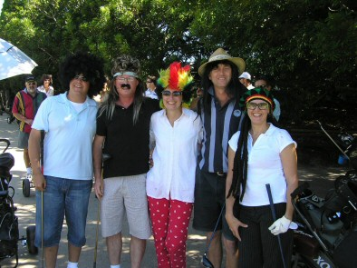

| Social Golf Day - 30 March 2008 |
|
Report by Peter Rolls

A quality day with quality people and entertaining golf. There were some quality shots
as well but most of them were just agricultural! I don't think I have ever been on a
golf course before where I knew everyone that was playing on the course and I didn't
have to apologise for hitting my ball on their fairway!
Sorry I didn't have a chance to take more pictures or of the winners but
Paul has some good video which may end up on YouTube. Note our president
sneaking a beer before tee off hidden behind Belinda and Jillian.
Here were some of the highlights of the day:
Impressive head gear by Margie, Stu, the Renfy's, Dave Hogan and Marcia. Although
Margie had to take hers off early into the round as the crows thought she was a
cockatoo and threatened to attack!
An impressive 6 birdies by Gary Flockton's group to be 6 under par (off scratch!)
They literally stole the shirts off our backs!
Geoff Dunlop's group only 3 shots (nett score 53.5) behind Gary's group (nett score
50.5) I think the gloves will be off next time!
Darren McIeneny's group 3.4 shots behind Geoff's group. The book vouchers as prizes
will come in handy to better 'read' the greens next time!
Janine Rowe-Hearnes 10 airs wings off the first tee puts her in good shape to be a
helicopter pilot!
Robin Butterfield's first drive hits the 'Keep Off' sign in the garden bed in front
of the first tee!
Terry William's group hitting their third shot on 2nd hole from the 1st fairway were
in mortal danger as Darrens' group sent missiles over their heads!
Dave Burn wins the 'sting' award for swapping Jenny Cerroti's ball for an exploding
one on the 3rd tee. For 10 seconds she honestly thought she broke her ball! (I thought
the flying two-metre pink ribbon would have given it away!) Blondes have more fun?
Alex McCoy's group covered more ground than the Leyland brothers on the 7th hole as
they hit their third shot from the 4th greens bunker. Then he sculled it out of the
bunker only to hit my bag and it returned to him!
Marcia Giblin was seen changing her faith on the 11th hole - golf does that to you!
Middle of the fairway she was on her knees praying to the east. (She claims she was
stretching as her back was out after so many swings!)
Next year nine holes might be the go as 5 hours of golf and 2 hours of drinking does
not seem to be the correct proportion!
And thanks heaps to our sponsors:
Heather Curdie for the beautiful books from Random House.
Firgal Adams for also supplying some great books (different to Heathers) and book gift
vouchers from his company Book Margins.
Barlow World for the VW Eos weekend loan car. (Great for romantic parking we hear!)
Andrew Hobden's group worthy winners as the 13th group and hoping for some driving tips!
Lesley Campbell for the classy bath robe from Heritage Hotels (and no, she did not lift
it from a weekend away with hubby Brett!) Jillian - the lucky winner from the draw of
ladies who had never played 18 holes before (and may never do so again!)
Debbie Uhrig for the Best Attire prizes to Stu, Margie and Marcia and also for the
exploding golf balls. (Jenny loves you!)
Thanks also to Paul Uhrig for the video camera and projector and gathering the scores.
Top notch!
Have a super soccer season!
- Pete
|